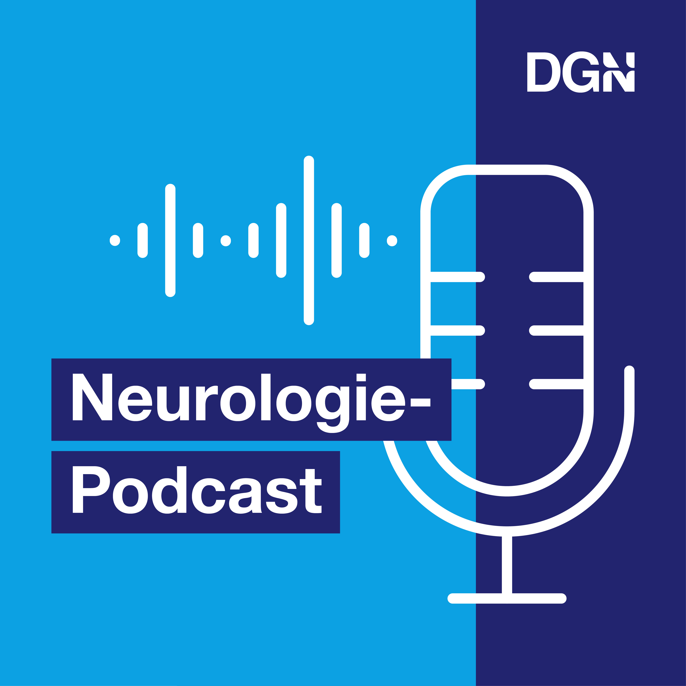

DGN: Neurologie-Podcast
Der DGN-Podcast über neurologische Krankheiten, aktuelle Forschungsthemen und Karrieremöglichkeiten
Die Shownotes zu Folge 1: Die Prodromalphase der Parkinsonsyndrome
Welche Symptome gehen dem Vollbild des idiopathischen Parkinsonsyndroms teils Jahrzehnte voraus? Wie gehe ich mit Patient*Innen in dieser Phase der Erkrankung um? Und wie kann ich die Parkinsonsyndrome unterscheiden? In dieser Folge vom neuen Neurologie Podcast, produziert von der DGN und den Jungen Neurologen, sprechen wir mit Frau Professor Dr. Daniela Berg über die Prodromalphase der Parkinsonsyndrome. Bleibt bis zum Ende am Ball, denn am Ende jeder Folge erwartet euch ein spannender oder denkwürdiger Fall, der unserem Gast besonders in Erinnerung geblieben ist.
Literaturtips und PD Calculator
Prodromalsymptome
Hier findet ihr die Research Criteria für die Prodromalphase des Morbus Parkinson:
- Berg D, Postuma RB, Adler CH, Bloem BR, Chan P, Dubois B, Gasser T, Goetz CG, Halliday G, Joseph L, Lang AE, Liepelt-Scarfone I, Litvan I, Marek K, Obeso J, Oertel W, Olanow CW, Poewe W, Stern M, Deuschl G. MDS research criteria for prodromal Parkinson's disease. Mov Disord. 2015 Oct;30(12):1600-11. doi: 10.1002/mds.26431. PMID: 26474317.
- Heinzel S, Berg D, Gasser T, Chen H, Yao C, Postuma RB; MDS Task Force on the Definition of Parkinson's Disease. Update of the MDS research criteria for prodromal Parkinson's disease. Mov Disord. 2019 Oct;34(10):1464-1470. doi: 10.1002/mds.27802. Epub 2019 Aug 14. PMID: 31412427.
Im folgenden Fenster könnt ihr den PD Calculator nutzen (mit freundlicher Genehmigung von Frau Professor Berg):
Idiopathisches Parkinson Syndrom
Klinische Anweisungen zur Identifizierung der Kardinalsymptome, inklusive der Unterscheidung von atypischen Parkinson Syndromen, findet ihr in dieser Arbeit:
- Postuma RB, Berg D, Stern M, Poewe W, Olanow CW, Oertel W, Obeso J, Marek K, Litvan I, Lang AE, Halliday G, Goetz CG, Gasser T, Dubois B, Chan P, Bloem BR, Adler CH, Deuschl G. MDS clinical diagnostic criteria for Parkinson's disease. Mov Disord. 2015 Oct;30(12):1591-601. doi: 10.1002/mds.26424. PMID: 26474316.
REM-Schlaf-Verhaltensstörungen
In diesem sehr ausführlichen Report findet ihr unter anderem klinische Merkmale der REM-Schlaf-Verhaltensstörungen und Differentialdiagnosen im Allgemeinen, inklusive Bezug zu Patienten mit idiopathischem Parkinsonsyndrom:
- Carlos H. Schenck, MD, Mark W. Mahowald, MD, REM Sleep Behavior Disorder: Clinical, Developmental, and Neuroscience Perspectives 16 Years After its Formal Identification in SLEEP, Sleep, Volume 25, Issue 2, January 2002, Pages 120–138, https://doi.org/10.1093/sleep/25.2.120
Dieses Review gibt euch ebenfalls einen Überblick über REM-Schlaf-Verhaltensstörungen und setzt den Fokus auf das idiopathische Parkinsonsyndrom und andere Synucleinopathien:
- St Louis EK, Boeve AR, Boeve BF. REM Sleep Behavior Disorder in Parkinson's Disease and Other Synucleinopathies. Mov Disord. 2017 May;32(5):645-658. doi: 10.1002/mds.27018. PMID: 28513079.
Einen Überblick über Schlaf bei Patienten mit idiopathischem Parkinsonsyndrom, inklusive Diagnostik und Therapie von Schlafstörungen, bietet dieses Review:
|

|
Redaktionelle Leitung:
Dr. med. Johannes Piel
E-Mail: johannes.piel@uksh.de
Klinik für Neurologie
UKSH, Campus Kiel
Arnold-Heller-Str. 3, Haus D
24105 Kiel
|
Disclaimer:
In Einklang mit der Bundesärztekammer bitten wir zu beachten, dass dieser Podcast keine ärztliche Beratung ersetzt. Wir können gemäß des Fernbehandlungsverbotes keine individuelle Beratung durchführen oder Empfehlungen aussprechen, von entsprechenden Anfragen bitten wir daher abzusehen. Patient*Innen werden gebeten, inhaltliche Fragen mit ihrer*ihrem Neurologin*Neurologen zu klären. Wir übernehmen keine Verantwortung für eine eventuelle Selbstoffenbarung sensibler Daten im Internet und bitten daher, keine persönlichen Daten oder Inhalte Ihrer Erkrankungen im Internet zu veröffentlichen.